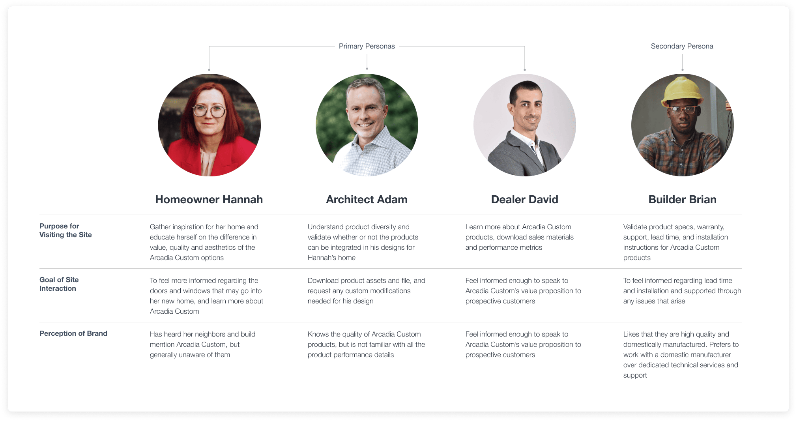
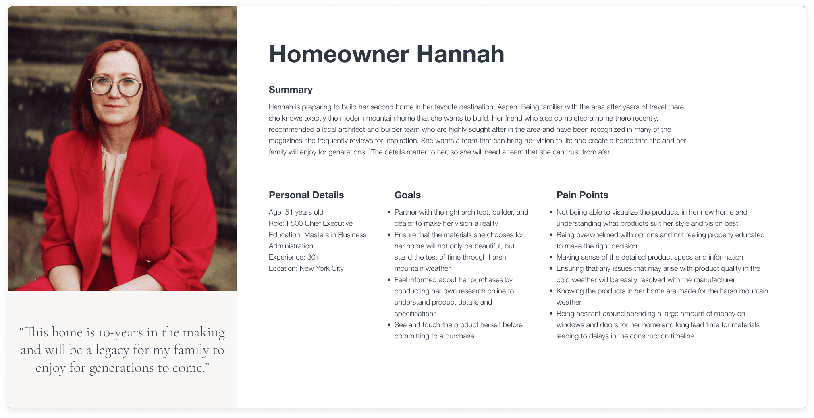

OVERVIEW
Arcadia Custom provides custom-made, luxury windows & doors to the high-end residential market.
They have a strong reputation in the architectural space for the quality and performance of their products. They wanted to create a digital experience that is an extension of the premium services they provide, while easing the home building process for their core audiences.
My Role
Experience Design Lead: Product Vision
Timeline
10 Weeks (June - August 2022)
Deliverables
Site Redesign, item 1, item 1
Problem
A high-end, luxury experience that meet the needs for each persona group:
- Homeowners have difficulty visualizing how different customization and configuration options would match the style they’ve envisioned for their home. They would like to feel informed when making a large purchase and experience the quality of products before going to a physical showroom location.
- Professionals (Architects, Dealers and Builders) require technical documentation and 3D assets to be readily available. It is extremely frustrating for them to submit a manual request for every file they need and wait for a response.
Solution
A new desktop and mobile web experience
Brand & Storytelling initiative
- Modern, clean, luxurious brand color palette, typography and styling
- Strong narrative on each page, leading with a clear beginning, middle and end
- Guidelines for authoring imagery to ensure a cohesive visual story
Product Customization & Configuration Options
- Surface key product features with ability to further explore customization and configuration options
- Surfaced ‘customization options’ in global navigation as educational content
Resource Library for Professionals
- Enables professionals to quickly download technical information (3D assets, energy performance, installation and warranty etc) for specific products without having to manually submit a request form
- Option to toggle between general overview and technical specs when viewing specific products
Our Approach

Our Constraints
- 10 week timeline
- First Project Using AEM Core Components (Internal Library)
- Designing Components That Scale
- Defining Brand Assets - Color, Typography & Iconography
- Storytelling With Imagery
- Reducing Component Complexity
RESEARCH & DISCOVERY
In preparation for the Design Thinking Session (DTS), we had a 2-Week Research & Discovery Phase to understand the current competitive landscape, conduct interviews, create personas, user journeys and gather inspiration.
Our Constraints
Arcadia Custom has a network of over 140 high-end window and door dealers across the nation. A few members of our New York team had the opportunity to visit a facility in Stamford to conduct interviews.
We learned that:
- Customers are sold on Arcadia Custom products before they come in by recommendations from pre-qualified architects and builders
- Customers immediately feel the value of the product upon touching it. They are always impressed with the build quality and weight. They are not price sensitive, they just want the best visual and design
- Every Arcadia Custom product is made to the specs of the house it will be installed in. Most of their competitors have standard sizes that architects/builders have to work around (24” x 36”)
- Arcadia Custom has a lead time of 12 weeks due to their national manufacturing presence. Most competitors have a lead time of 20-30 weeks with only one facility in the nation
- Their simulated steel product is their best seller. Priced like aluminum but looks like steel. Competitors imitate but Arcadia Custom has a superior product
- Each showroom location has different product offerings and product lines available
After the on-site visit, we were inspired to...
- 1) Capture the quality & flexibility of products offered by Arcadia Custom into the digital experience
- 2) present Arcadia Custom as a partner in luxury home design rather than simply a window and door manufacturer

Competitive Analysis
To better understand the competitive space, we examined how direct competitors met the needs of homeowners and professionals looking to use their products. Specifically taking note of the information architecture (overall ease of navigation), products (product detail page and specs) and process (inspiration gallery).
Overall, we found that top-level luxury brands in the window & door space lacked innovative, modern site experiences. We needed to lean on best practices and inspiration from brands at a lower level of luxury as well as parallel industries to craft an experience best suited for Arcadia Custom.
Stakeholder Interviews
To gather insight from internal teams, we conducted 7 interviews with stakeholders across Arcadia Custom and DMC Global. Each interview was approximately 45 minutes, in-person or through video. The topics covered were specific to each interviewee’s department and area of expertise.
Affinity Mapping
With results from the stakeholder interviews, we then moved on to an affinity mapping exercise. This activity produces a physical, tactile and editable design artifact that helps us visualize common trends, themes, areas of opportunity and improvements.

- High quality photography is crucial to show products’ context in a home
- Arcadia Custom’s brand values speak to their excellence in product innovation
- Arcadia Custom’s digital ambitions go beyond a visually redesigned website
- Raising the brand perception of Arcadia Custom is a top priority
- The product quality of Arcadia Custom is unmatched by competitors
- Interviewees were inspired by other great brands (Nike, Restoration Hardware, Tesla etc.)
- It’s important that we address the needs of all of our persona groups
For each of the key themes, we thought of ‘How Might We…’ (HMW) questions to help us align with the business needs.
Personas
To better inform our design decisions and build empathy for our users, we synthesized stakeholder interviews to create the following personas:
 Journey Mapping
In order to create a personalized experience, we needed to fully understand how each persona interacts with one another. To do so, we created user journeys for each persona then consolidated them into one user journey map. This helped surface overlapping pain points that we would later address in our designs.